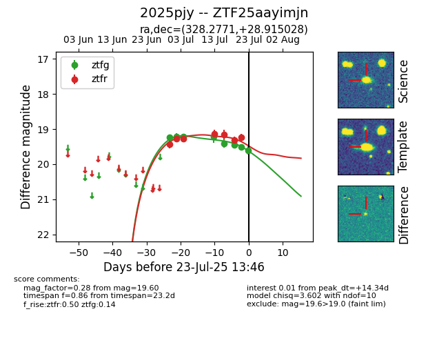

Target ZTF25aayimjn at 2025-07-23 13:46, see:
FINK: fink-portal.org/ZTF25aayimjn
Lasair: lasair-ztf.lsst.ac.uk/objects/ZTF25aayimjn
ALeRCE: alerce.online/object/ZTF25aayimjn
TNS: wis-tns.org/object/2025pjy
YSE: ziggy.ucolick.org/yse/transient_detail/2025pjy
alt names
ZTF25aayimjn (ztf,fink)
2025pjy (tns,yse)
coordinates:
equatorial (ra, dec) = (328.2771,+28.91503)
galactic (l, b) = (82.2424,-19.53551)
photometry
last ztfg=19.60, ztfr=19.24
8 ztfg, 7 ztfr detections
